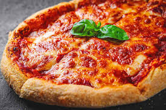
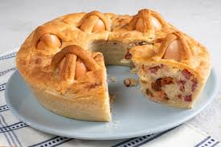
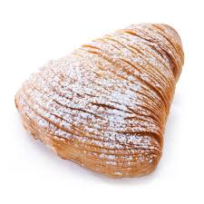

Pizza
La pizza è un prodotto gastronomico italiano, costituito da una base lievitata ricavata da un impasto di farina e acqua, condita con vari ingredienti e cotta ad alta temperatura, tradizionalmente in un forno a legno.
Casatiello
Se a Natale in Campania non può mancare la pizza di scarola, a Pasqua il re della tavola è senza dubbio il casatiello! Questa tipica ciambella salata farcita con salumi e formaggi si caratterizza per la presenza delle uova in superficie, una decorazione dal significato simbolico e religioso in quanto i cordoncini con cui vengono ingabbiate richiamano la forma della croce. E’ proprio questa caratteristica a distinguere il casatiello dal suo “cugino” tortano, una torta rustica molto simile in cui le uova sode sono aggiunte direttamente nel ripieno. Come tutte le ricette regionali, inoltre, si possono trovare tante varianti, tutte ugualmente appetitose… per esempio il casatiello stracciato, che prevede un metodo di lavorazione leggermente diverso. Noi abbiamo scelto di realizzare la versione più tradizionale del casatiello napoletano, quella preparata con lo strutto, i cicoli, il salame, il pecorino e il provolone.
Sfogliatella
La sfogliatella riccia è triangolare, croccante ed è costituita da pasta sfoglia sovrapposta a strati fittissimi. Il ripieno è di semola, ricotta, canditi, latte, uova e zucchero. Esistono alcuni varianti della sfogliatella napoletana riccia chiamate code di aragosta dolci. Sono più lunghe e ripiene di panna, crema chantilly o al cioccolato.
Gnocchi alla sorrentina

Uno dei primi piatti campani più conosciuti in Italia e all’estero... sono gli gnocchi alla sorrentina, preparati davvero in tutti i ristoranti del mondo! Ciò che rende questo piatto di gnocchi così amato è il mix di sapori mediterranei, genuini e semplici. Fare a mano gli gnocchi vi riporterà alla mente le domeniche passate a casa della nonna a carpire tutti i segreti celati dietro alla consistenza perfetta di quelle piccole gemme di patate e farina. Gli gnocchi alla sorrentina poi sono avvolti da un cremoso sugo di pomodoro e basilico, insaporiti da mozzarella e formaggio grattugiato... proprio gli ingredienti che renderanno ancora più goduriosi gli gnocchi creando un effetto filante dopo il brevissimo passaggio in forno. Per variare potreste anche provare a realizzare gli gnocchi di zucchine, in alternativa al classico impasto con le patate.
Spaghetti alle vongole

Direttamente dalla tradizione campana gli spaghetti alle vongole: un classico della cucina italiana e uno dei primi piatti di pasta più amati, replicati e interpretati. Tra i primi piatti di pesce è forse tra quelli che si sceglie quando ci si deve cimentare in cucina per le prime volte con la materia "marina", ma è tutt'altro che basic da preparare: servono alcuni trucchi e accortezze per un risultato cremoso, profumato e dal perfetto equilibrio tra pasta e molluschi! Una ricetta comunque semplicissima perché con pochi ingredienti si ottiene un primo piatto spettacolare, dal meraviglioso sapore di mare: vongole polpose, spaghetto trafilato, spolverata di prezzemolo e la deliziosa cremina che si crea naturalmente con l'amido della pasta, fanno degli spaghetti alle vongole una vera prelibatezza